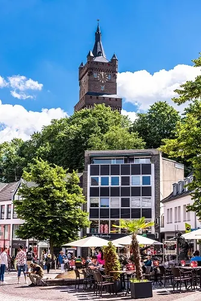
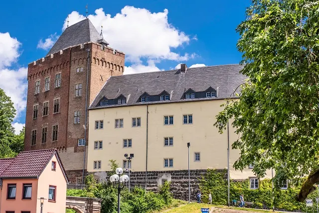
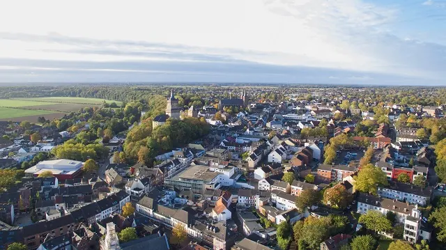
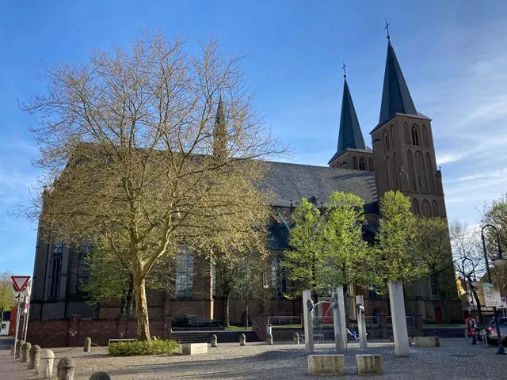
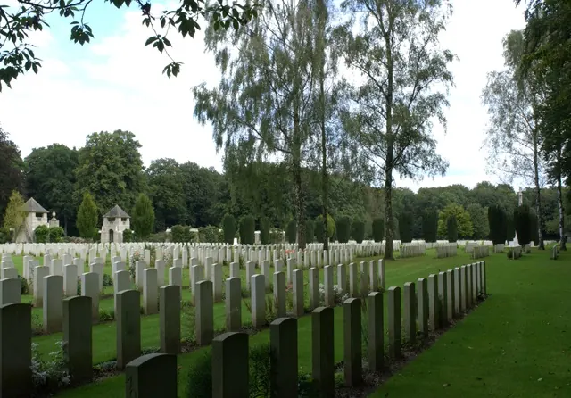
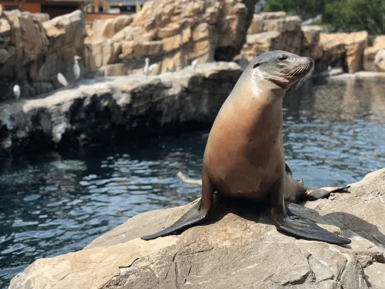
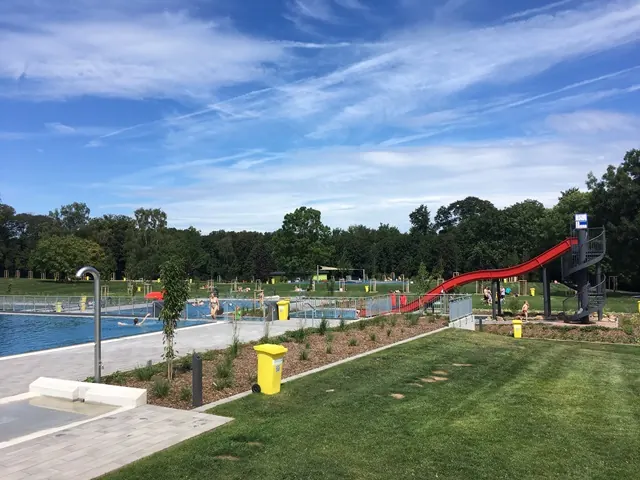
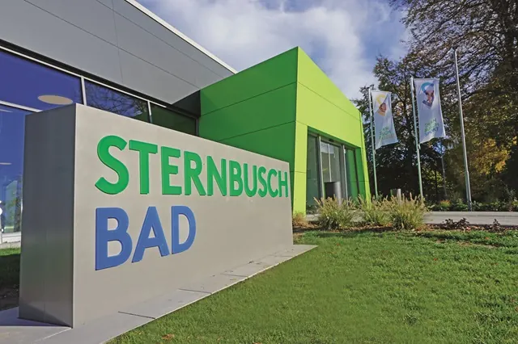
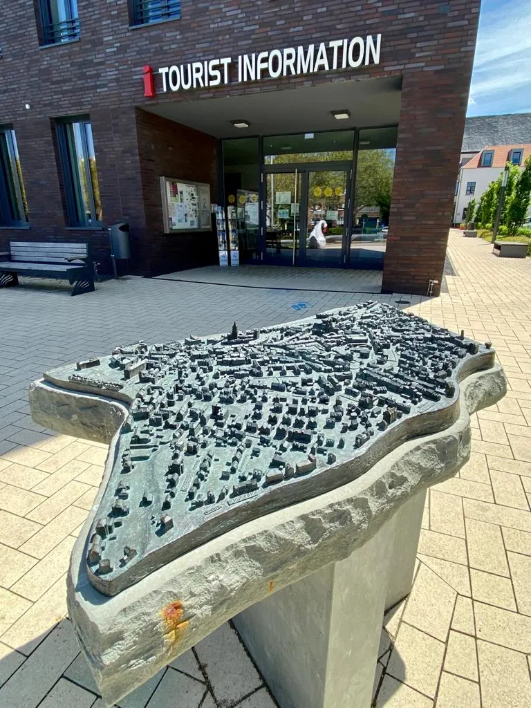

Bestemming bij Nijmegen
Kleef (Kleve)

Kleef, in het Duits Kleve, is de stad net over de grens bij Nijmegen. In een klein halfuur sta je in een stad met een kasteel op de heuvel, een gezellige winkelstraat, barokke tuinen en een dierentuin. Veel Nijmegenaren gaan er voor de boodschappen bij Kaufland en de drogisterij, maar Kleef is ook een fijne bestemming voor een dagje uit.


Kleef ligt op een uitloper van de stuwwal, tussen het Reichswald en de Rijn, en heeft een geschiedenis die teruggaat tot de middeleeuwen. Boven de stad staat de Schwanenburg, het kasteel van de graven en hertogen van Kleef. Anna van Kleef, de vierde vrouw van de Engelse koning Hendrik VIII, kwam uit dit hertogelijk huis. Rond de stad liggen parken en de tuinen die Johan Maurits van Nassau in de zeventiende eeuw liet aanleggen.
Van Nijmegen naar Kleef
- Met de auto: via Groesbeek of via Kranenburg ben je in ongeveer 25 minuten in het centrum. In de binnenstad parkeer je in een parkeergarage of op een betaald parkeerterrein; bij de grote supermarkten aan de rand van de stad is het parkeren meestal gratis.
- Met de bus: snelbus SB58 rijdt vanaf station Nijmegen via Kranenburg naar Kleef. Kijk voor de actuele dienstregeling in de reisplanner van 9292 of de NIAG.
- Op de fiets: zo'n 25 kilometer, via de Ooijpolder en Wyler of via Groesbeek en Kranenburg. Tussen Groesbeek, Kranenburg en Kleef kun je ook met de fietsdraisine over het oude spoor.

Winkelen in Kleef
De winkelstraat van Kleef loopt van de Schwanenburg naar beneden, met kledingwinkels, een paar warenhuizen, bakkers en terrassen. Voor de boodschappen gaan veel Nederlanders naar de grote supermarkten en drogisterijen aan de rand van de stad, zoals Kaufland, Lidl en DM. Ook voor vegetarisch en veganistisch eten is het aanbod daar groot. Andere bekende winkels zijn TEDI, KiK, de biomarkt en de winkels aan de Hoffmannallee.
Openingstijden winkels Kleve
De meeste winkels in de binnenstad van Kleef zijn van maandag tot en met zaterdag open van ongeveer 9.30 tot 18.30 uur. Op zaterdag sluiten kleinere winkels vaak eerder, en supermarkten zijn meestal langer open.
Op zondag zijn de winkels in Duitsland dicht. Alleen op een paar verkaufsoffene Sonntage per jaar mogen ze open.
Van 27 november t/m 6 december 2026 staat de kerstmarkt rond het stadhuis, en op zondag 29 november is er een koopzondag. Lees alles in Kerstmarkt Kleve 2026.
Bezienswaardigheden in Kleef
- De Schwanenburg en de Schwanenturm: het kasteel boven de stad. Vanaf de toren heb je uitzicht tot over de grens.
- De Stiftskirche: de grote gotische kerk naast de Schwanenburg, met de grafmonumenten van de graven van Kleef.
- De tuinen en Museum Kurhaus: de barokke tuinen met het amfitheater en het museum voor moderne kunst in het oude kuurhuis.
- Reichswald Forest War Cemetery: de grootste Britse oorlogsbegraafplaats van Duitsland, in het bos tussen Kleef en Kranenburg.
Meer tips lees je in ons artikel Kleef bezoeken: 7 tips net over de grens.


Dierentuin Kleve
In de Tiergarten van Kleef zie je meer dan 300 dieren van dichtbij. Veel dieren mag je voeren met voer dat je in het park koopt, en er zijn rondleidingen over de dieren en de natuurbeschermingsprojecten van de dierentuin. Wie zelf dierenverzorger wil zijn, kan een introductiedag dierverzorging volgen.
Openingstijden Dierentuin Kleve
Zomerseizoen (1 maart tot 31 oktober): 9.00 uur tot 18.00 uur
Winterseizoen (1 november tot 28/29 februari): 9.00 uur tot 17.00 uur
De laatste toegang is 30 minuten voor sluitingstijd. Op kerstavond en oudejaarsavond is de dierentuin open van 9.00 tot 13.00 uur.
Adres: Tiergartenstraße 74, 47533 Kleve. Meer informatie op de site van de dierentuin.

Zwemmen in Kleve: het Sternbuschbad
Het Sternbusch Freizeitbad heeft verschillende zwembaden en een wellnessgedeelte, en is geschikt voor gezinnen, baantjeszwemmers en wie even wil ontspannen. Bekijk vooraf de 360-gradentour.


Toeristeninformatie Kleve
Bij het toeristenbureau in het stadhuis kun je terecht met vragen en koop je fietskaarten, ansichtkaarten en souvenirs.
- Maandag tot en met donderdag van 10.00 tot 16.00 uur
- Vrijdag en zaterdag van 10.00 tot 14.00 uur
- In het weekend is er ook informatie in de Schwanenturm, zaterdag en zondag van 11.00 tot 17.00 uur
Tourist Information Kleve
Minoritenplatz 2, 47533 Kleve
Vanuit Nederland: 0049 2821 84806
kleve-erleben.de

Stadhuis Kleve: Minoritenplatz 1, 47533 Kleve, telefoon 0049 2821 840, www.kleve.de. Het stadhuis heeft wisselende openingstijden en voor veel zaken werk je op afspraak.
Evenementen in Kleef
Wat er binnenkort te doen is in Kleef, zie je in onze agenda voor Kleve. Kaartjes voor concerten en voorstellingen koop je via Reservix.
In de buurt
Combineer Kleef met Kranenburg, dat op de route vanuit Nijmegen ligt, of rijd door naar Emmerik aan de Rijn of Goch. Alle plaatsen net over de grens staan in onze gids Over de grens: Kleef, Emmerik, Goch en Kranenburg.
Veelgestelde vragen over Kleef
Waar ligt Kleef?
Kleef (in het Duits Kleve) ligt in Duitsland, net over de grens bij Nijmegen. Het centrum van Kleef ligt ongeveer 25 kilometer van het centrum van Nijmegen.
Is Kleef hetzelfde als Kleve?
Ja. Kleef is de Nederlandse naam, Kleve de Duitse. Het is dezelfde stad, met de Schwanenburg en de Stiftskirche.
Hoe kom je van Nijmegen naar Kleef?
Met de auto ben je er in ongeveer 25 minuten via Groesbeek of Kranenburg. Snelbus SB58 rijdt vanaf station Nijmegen naar Kleef. Op de fiets is het zo'n 25 kilometer, bijvoorbeeld door de Ooijpolder.
Zijn de winkels in Kleef op zondag open?
Nee. In Duitsland zijn de winkels op zondag dicht, behalve op een paar koopzondagen (verkaufsoffene Sonntage) per jaar.
Wat kun je doen in Kleef?
Winkelen in de binnenstad, de Schwanenburg en de Schwanenturm beklimmen, de barokke tuinen en Museum Kurhaus bezoeken, naar de dierentuin of zwemmen in het Sternbuschbad. In december is er een kerstmarkt.
Wanneer is de kerstmarkt in Kleef?
In 2026 is de kerstmarkt van 27 november tot en met 6 december, met een koopzondag op 29 november.
Lees ook

7x Kleef net over de grens bij Nijmegen
Net over de grens, vlak bij Nijmegen ligt Kleef, of Kleve, zoals de Duitsers zeggen. Kleef is een leuk stadje om te bezoeken en een leuk uitje; het ligt…

Zin in zee of stad? 3x perfecte uitstapjes buiten Nijmegen
Soms is het heerlijk om even de stad uit te gaan en een dag of weekend iets nieuws te ontdekken. Vanuit Nijmegen ben je in no time aan zee, in een…

3x een leuke Bed and Breakfast in Wijchen
De meest opvallende oude bezienswaardigheid in Wijchen is het centraal gelegen Kasteel van Wijchen, dat voor het eerst genoemd wordt in archiefstukken uit…